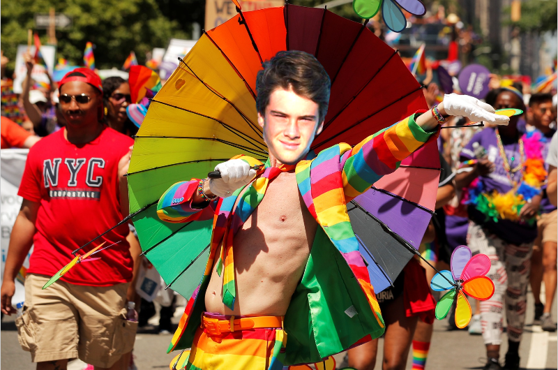
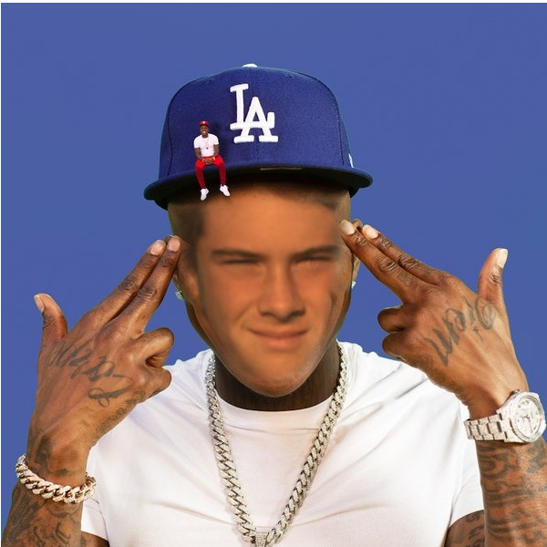
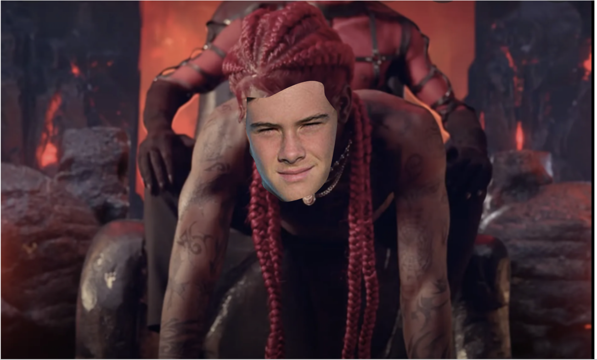
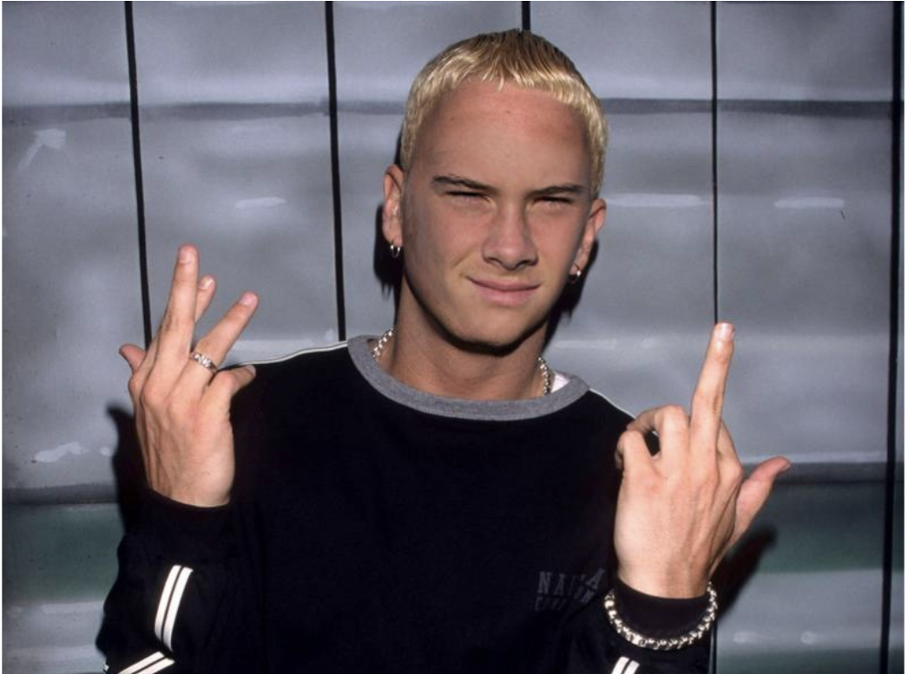
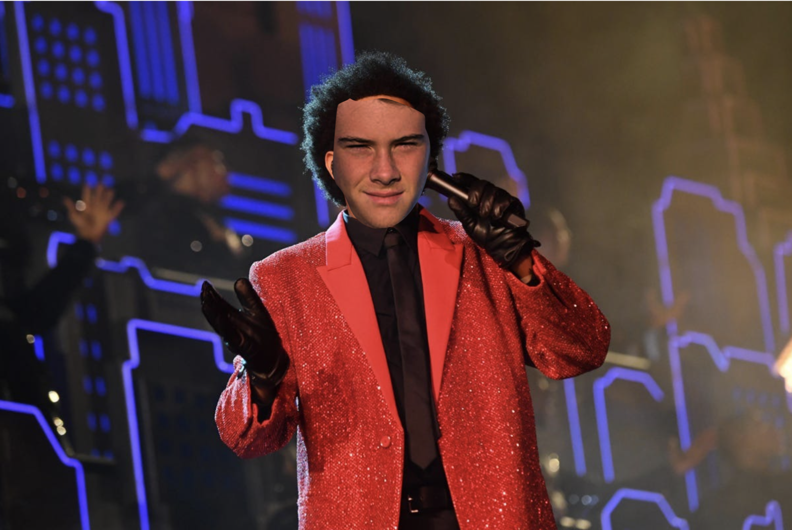

In the image above, we see Alexander Emery depicted as an overweight male.
Here's Alex showing his true colors
Here we see Alex looking like DABABY
Now Alexander is calling you when you want
He the real slim shady
Alex can't feel his face
-->